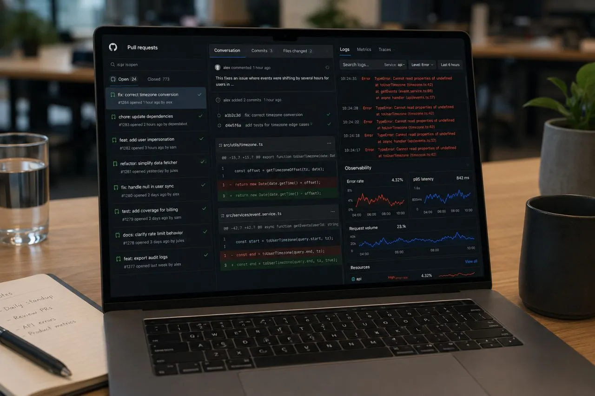

Using AI to analyze my team's pull requests
Originally posted on LinkedIn, June 21, 2026.
As an engineering team lead, one of the most useful things I do now is analyze my team's Pull Requests with AI.
I ask Cursor or Claude Code, connected to our repository through GitHub CLI, to analyze the PRs. It runs commands such as gh pr list with search filters and returns concrete findings. I can ask it to analyze the last sprint or quarter, show who worked most in a specific part of the codebase, identify bottlenecks, compare review activity, and find whose changes introduced more bugs.
I also use it to investigate incidents. It can look for the Smoking gun behind a production incident or an increase in Errors found by our Observability tools. This gives me a clear picture of what each person did, where they contributed, and where they got stuck. It makes me a more precise, evidence-based manager.
I keep making the same argument: we are moving from being data-driven to AI-driven. Data analysis and drawing conclusions used to take hours or days. That work was mostly reserved for analysts and primarily served product teams. Now, anyone can analyze the data closest to their job with almost no effort and get clear, useful findings.
A recent incident led me to write this. I saw a production problem in real time and asked the model to locate it in the GCP logs. I then asked it to review every PR from the previous two weeks and identify the exact change that caused the problem. Without AI, finding that Smoking gun would have taken hours and involved at least one developer, probably more.
When a team lead can ask a question in natural language and get an answer within seconds, they have a management tool that did not exist before. The mindset shift is to treat AI as an analysis and research tool, not just a code completion tool. That is how it helps us become super-managers.
